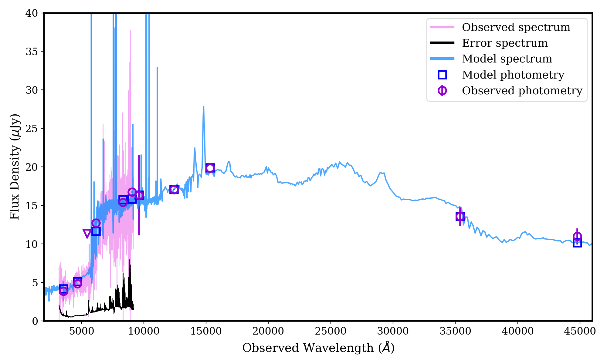

I am a second-year PhD astronomy student and a NSF Graduate Research Fellow at
Northwestern University exploring the fast and exotic transients
with Prof. Wen-fai Fong.
Particularly, I focus on radio follow-up of fast radio bursts (FRBs) and
their associated perisistent radio source (PRS) using the Very Large Array (VLA) observations.
Research
Fast Radio Bursts
Fast Radio Bursts (FRBs) are milisecond-duration radio transients with high dispersion measures (DM)
that implies an extragalactic origin.
Gamma-ray Bursts
A way to understand the formation and evolution of binary neutron star (BNS) mergers is through
short gamma-ray bursts (SGRBs) as they have long been connected with one another. In particular,
I examine the host galaxies of these SGRBs by looking at their characteristics such as age, mass, and
metallicity in order to constrian the binary progenitor systems.
I utilize Prospector, a stellar population inference Python package, and observational data including photometry and spectroscopy as shown in the figure.
From there, I model the spectral energy distribution (SED) of SGRB host galaxies using both a parametric and a non-parametric model
that describe different kinds of star formation history. The model fits and all the data produts are available via Broadband Respository for Investigating GRB Host galaxies Traits
(BRIGHT).

Example SED for GRB 200522A.
Calcium-rich Transients
Unlike tradition the traditonal core-collapse (CC) and thermonuclar (Type Ia) supernova divide,
Calcium-rich (Ca-rich) transients have spectroscopic features similar to CC supernovae (SNe), yet are often found in the remote outskirts of
Elliptical galaxies, resembling the host enviornments of Type Ia supernovae. Literatures suggest that they may be a significant driver of
chemical evolution in the intracluster medium. However, the biggest mysterious surrounding this newly recognized type of SNe is their unknown origins.
In order to place stringent constraints on their progenitor systems, I characterized the stellar populations of Ca-rich transients host galaxies
using archival broadband photometric data from Far UV to infrared and Prospector. Specifically, I modeled the star formaton histories of all nineteen host galaxies First
with a delayed-tau function form, then a continuity non-parametric model that is more sensitve to recent star formation.
Outreach
Donec imperdiet consequat consequat. Suspendisse feugiat congue
posuere. Nulla massa urna, fermentum eget quam aliquet.
5,120 Etiam
8,192 Magna
2,048 Tempus
4,096 Aliquam
1,024 Nullam
Nam elementum nisl et mi a commodo porttitor. Morbi sit amet nisl eu arcu faucibus hendrerit vel a risus. Nam a orci mi, elementum ac arcu sit amet, fermentum pellentesque et purus. Integer maximus varius lorem, sed convallis diam accumsan sed. Etiam porttitor placerat sapien, sed eleifend a enim pulvinar faucibus semper quis ut arcu. Ut non nisl a mollis est efficitur vestibulum. Integer eget purus nec nulla mattis et accumsan ut magna libero. Morbi auctor iaculis porttitor. Sed ut magna ac risus et hendrerit scelerisque. Praesent eleifend lacus in lectus aliquam porta. Cras eu ornare dui curabitur lacinia.
Congue imperdiet
Donec imperdiet consequat consequat. Suspendisse feugiat congue
posuere. Nulla massa urna, fermentum eget quam aliquet.